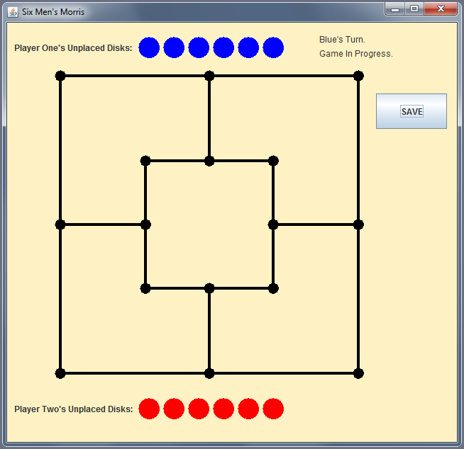

My Projects
Below I've showcased some of the projects I've worked on in the past, whether they be part of a school project or something I've worked on outside of school. Feel free to check out the source code for some of these
projects on Github.
I developed this program in Java for a final project in my university second year Software Design course. The game is a variation on the classic strategy board game Nine Men's Morris, with options to start a new game against a computer-controlled player or a 2-player game against a friend. Additional features include being able to setup a preset board, save your current game progress, and load previously saved games. The project also involved documentation that contained modular decomposition, class descriptions, UML diagrams, and a program test report.
Tools: Java (Swing, MVC architecture)

- 

As part of WesternHack 2015, I contributed to a hackathon project to create a fitness application that used a Pebble Smartwatch to capture changes of velocity and acceleration in 3D space. I created the Android App that used the data obtained from the watch and converted it into meaningful graphs of rest time vs active time for the user. The algorithm to determine how to detect the changes to provide accurate information was created in C.
Tools: Android Studio (Java, XML), C, Pebble Smartwatch
As part of BostonHacks 2015, my team and I created an emergency news text subscription service which allowed users to subscribe with their phone number and city to be sent text messages about emergencies from other people in their area. We used Django to create our website which we hosted on Microsoft Azure, and I helped work on the backend and design of the website. This hackathon, being my first, taught me a lot about starting out with a basic idea for a project and working in a team to get a finished product all within one weekend.
Tools: Django (Python), HTML/CSS, Azure, Twilio API
For my final group project in my last year of Computer Science in high school, I worked on a Track & Field database program in Java that recorded student information and statistics for the cross country team. Some features included graphing statistics of individual runners, sorting students based on different attributes, and file I/O. The project also had final documentation that included a GANTT chart, daily logs, class descriptions and diagrams, and program test charts.
Tools: Java (Swing, MVC architecture)